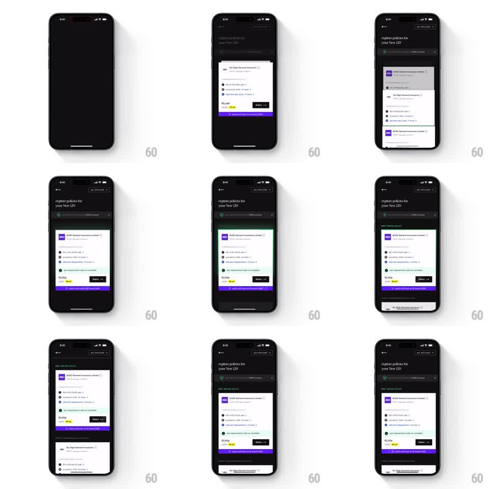

Media
Frame-by-frame

Rebuild this interaction 1:1: CRED's vehicle policy list - on the dark "explore policies for your New 120" screen, stacked insurance policy cards unstack into a scrollable list; the best-priced policy card expands with a green-highlighted border, price in rupees, feature checklist, and a "Select" button.

Rebuild this interaction 1:1: CRED's vehicle policy list - on the dark "explore policies for your New 120" screen, stacked insurance policy cards unstack into a scrollable list; the best-priced policy card expands with a green-highlighted border, price in rupees, feature checklist, and a "Select" button.
## Integration
Integration: stack-agnostic spec - springs given as stiffness/damping, timed motions as duration + curve; map every value to your framework and animation library of choice.
## Scene
Dark CRED screen: back chevron, "explore policies for your New 120" header, "ALL POLICIES" pill, and a vehicle chip ("New 120 / CRED garage"). Policy cards (ACKO General Insurance Limited, Go Digit General Insurance) start stacked - edges peeking behind the front card - then unstack into a vertical list. The front card expands: purple insurer logo, feature bullets ("IDV of ₹2,15,076 - add", "zero depreciation - add"), price "₹2,906", "Select" button, purple footer strip. "BEST PRICED POLICY" label with a green accent.
## Motion spec
Pattern: card unstack with highlight expansion.
- Cards begin overlapped: the top card covers all but 12pt slivers of the two behind it.
- On load (or tap), the stack fans out: each card translates down to its list position (spring ~300/20, 60ms stagger from top), the behind cards fading from 60% to full opacity.
- The best-priced card expands last: height grows to reveal the feature list and footer (200ms height ease-out) while a green glow border draws around it (stroke sweep, 400ms) and the "BEST PRICED POLICY" tag fades in above.
- The list then scrolls normally; the green highlight stays pinned to its card.
## Calibration
- The unstack reads as dealing cards onto a table - top first, each settling before the next.
- The green accent appears only after the unstack completes.
## Reduced motion
Cards fade into list positions (250ms), highlight appears without the sweep.
## Don't miss
- The purple footer strip inside the front card animates its width in as the card expands.
- Behind-card slivers show real card content (logos, prices), not gray placeholders.